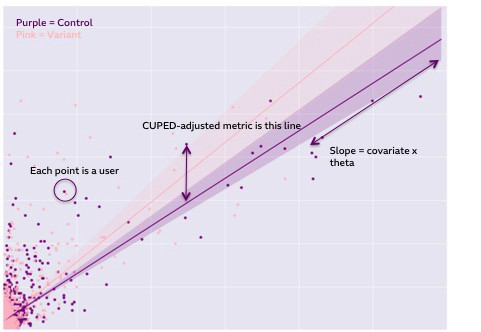
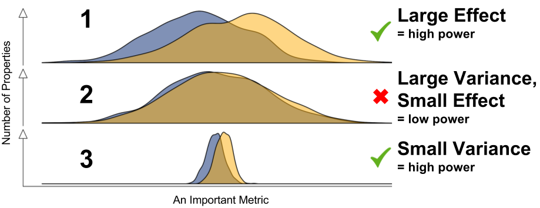
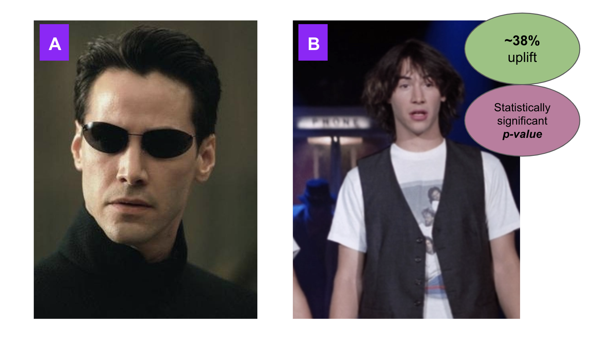

5. Variance Reduction Methods¶
Using a frequestist framework can come with some frustrating pitfalls. Namely, detecting statistical significance can be difficult when a large degree of variance exists within a metric.
The aforementioned challenge of detecting small differences to statistical significance relates to correspondingly low statistical power. When an experiment is underpowered, statistical analysis will likely return non-significant findings between your experimental conditions, regardless of whether a true and meaningful effect actually exists. In addition, low statistical power is exhibited when the treatment effect is too small in relation to the variance of the metric that is being assessed. Given that within-group variance is often high in web-data; where both super-users and “one-hit wonders” exist.
Despite the positive relationship that exists between sample size and experiment sensitivity, the large within-metric variance that is exhibited within our data is a constant, and thus often inhibits the detection of a statistically significant result.
Luckily methods currently exist that look to use pre-experiment information to control for within metric variance, which subsequently increases the statistical power of experiments. One such method is CUPED (controlled using pre-experiment data) which relies on the removal of variance within a metric that is attributed to pre-experiment information. CUPED is implemented on the notion that variance that pre-experiment data can explain in a metric is not correlated to any effects elicited by the change in a given experiment and can therefore be omitted from analysis.
It is recommended that the pre-experiment covariate (continuous metric) we are looking to integrate is the same as our primary experiment metric. This is because the increase in experiment sensitivity — achieved through a reduction in within-metric variance — is predicated on a strong correlation between the covariate and primary experiment metric, and so using the same metric is preferable. The correlation between the covariate and primary metric is then used to compute a constant (theta) that is applied to each unit (cookie_id), which is our CUPED-adjusted metric which we can then run a statistical test on:

The effect of this variance reduction is to achieve the hypothetical 3 below (taken from Booking.com Data Science):

In this Notebook we will use Pvs_per_session data collected prior to our Keanu experiment and use it to control for variance that is unrelated to the experiment itself, in order to increase the sensitivity of our statistical analysis.
But first - import necessary packages for analysis (last time I promise):
import pandas as pd
import seaborn as sb
import matplotlib as plt
import numpy as np
import statistics
from scipy import stats
import seaborn as sns
import matplotlib.pyplot as plt
from statsmodels.stats.multicomp import pairwise_tukeyhsd
from statsmodels.stats.multicomp import MultiComparison
import warnings
import statistics
import scipy
warnings.filterwarnings("ignore")
We can now import our new data-frame that has our pre experiment Pvs_per_session. Note that you will have to do various mergers prior to importing data, to ensure that the Pvs_per_session pre experiment data is matched on the same unique id, to ensure you have data for all users:
local = 'keanu_df_cuped.xlsx'
df = pd.read_excel(local)
df.head(100)
| unique_cookie_id | Variant | Pvs_per_session | Pvs_per_session_pre_experiment | |
|---|---|---|---|---|
| 0 | ##kdjdsvbnkdf | Control_Matrix | 2.343523 | 1.728696 |
| 1 | kldvnlkaefv | Control_Matrix | 1.234300 | 0.910479 |
| 2 | nvaljkdfnvkld4798 | Control_Matrix | 3.353000 | 2.473335 |
| 3 | shanuf9v354###nkas | Control_Matrix | 3.319751 | 2.448809 |
| 4 | nbncjkbd | Control_Matrix | 3.824490 | 2.821128 |
| ... | ... | ... | ... | ... |
| 95 | dkvhjdk844 | Control_Matrix | 8.367136 | 6.172004 |
| 96 | sjhkjfhbdwjkv | Control_Matrix | 8.871875 | 6.544323 |
| 97 | kldvnlkaefv | Control_Matrix | 9.376613 | 6.916643 |
| 98 | nvaljkdfnvkld4805 | Control_Matrix | 9.881352 | 7.288962 |
| 99 | shanuf9v361 | Variant_BT | 3.153445 | 3.346855 |
100 rows × 4 columns
CUPED-Analysis¶
We can now implement our CUPED methods. Firstly, we need to calculate a constant (theta) which will be applied to each cookie_id unit. The constant we apply is the covariance exhibited between the experiment metric (exp_plays) and the pre-experiment metric (pre_exp_plays) — which we have already established has a strong positive relationship — divided by the variance of just the pre-experiment data. We can calculate this with numpy:
covariance = np.cov(df.Pvs_per_session, df.Pvs_per_session_pre_experiment)
variance = np.cov(df.Pvs_per_session_pre_experiment)
theta_calc = covariance / variance
theta_calc_reshape = theta_calc.reshape(4,1)
theta = theta_calc_reshape[1]
print(theta)
[0.48857929]
df['CUPED-adjusted_metric'] = df.Pvs_per_session - (df.Pvs_per_session_pre_experiment - statistics.mean(df.Pvs_per_session_pre_experiment)) * theta
df.head()
| unique_cookie_id | Variant | Pvs_per_session | Pvs_per_session_pre_experiment | CUPED-adjusted_metric | |
|---|---|---|---|---|---|
| 0 | ##kdjdsvbnkdf | Control_Matrix | 2.343523 | 1.728696 | 3.208165 |
| 1 | kldvnlkaefv | Control_Matrix | 1.234300 | 0.910479 | 2.498705 |
| 2 | nvaljkdfnvkld4798 | Control_Matrix | 3.353000 | 2.473335 | 3.853827 |
| 3 | shanuf9v354###nkas | Control_Matrix | 3.319751 | 2.448809 | 3.832561 |
| 4 | nbncjkbd | Control_Matrix | 3.824490 | 2.821128 | 4.155392 |
To get a high-level view of the metrics:
df_grouped = df.groupby(['Variant']).mean()
df_grouped
| Pvs_per_session | Pvs_per_session_pre_experiment | CUPED-adjusted_metric | |
|---|---|---|---|
| Variant | |||
| Control_Matrix | 5.153563 | 3.692144 | 5.058905 |
| Variant_BT | 6.903478 | 3.306597 | 6.997190 |
You can now determine the relationship between the pre experiment and Pvs_per_session metric (remember the stronger the relationship, the more variance that can be omitted):
def r2(x, y):
return stats.pearsonr(x, y)[0] ** 2
r2(df.Pvs_per_session, df.Pvs_per_session_pre_experiment)
0.07757522952085316
As you can see, we have not yielded a particularly strong relationship (r^2) value between the two variables, but let’s see how much variance we have controlled for:
std_pvs = statistics.stdev(df.Pvs_per_session)
std_CUPED = statistics.stdev(df['CUPED-adjusted_metric'])
mean_pvs = statistics.mean(df.Pvs_per_session)
mean_CUPED = statistics.mean(df['CUPED-adjusted_metric'])
relative_pvs = std_pvs / mean_pvs
relative_cuped = std_CUPED / mean_CUPED
relative_diff = (relative_cuped - relative_pvs) / relative_pvs
print("The mean of the Pvs_per_session metric is %s."
% round(mean_pvs,4),
"The mean of the CUPED-adjusted metric is % s."
% round(mean_CUPED,4))
print ("The standard deviation of plays per browser is % s."
% round(std_pvs,4),
"The standard deviation of the CUPED-adjusted metric is % s."
% round(std_CUPED,4))
print("The relative reduction in standard deviation was % s"
% round(relative_diff*100,5),"%",)
The mean of the Pvs_per_session metric is 6.0329. The mean of the CUPED-adjusted metric is 6.0329.
The standard deviation of plays per browser is 2.8469. The standard deviation of the CUPED-adjusted metric is 2.7343.
The relative reduction in standard deviation was -3.95705 %
As you can see, we have managed to reduce the relative degree of variance (as measured by standard deviation) by ~4%; now we can perform statistical analysis on our newly computed metric, in order to determine whether there was a statistical effect or not:
Significance testing (post CUPED-Analysis)¶
mc = MultiComparison(df['CUPED-adjusted_metric'], df['Variant'])
mc_results = mc.tukeyhsd()
null_hypothesis = mc_results.reject
df_grouped = df[['Variant', 'CUPED-adjusted_metric']]
Control_Matrix = df_grouped[(df_grouped['Variant'] == 'Control_Matrix')]
Variant_BT = df_grouped[(df_grouped['Variant'] == 'Variant_BT')]
Mean_control = round(statistics.mean(Control_Matrix['CUPED-adjusted_metric']),4)
Mean_variant = round(statistics.mean(Variant_BT['CUPED-adjusted_metric']),4)
print(mc_results)
print("The mean of the Control (Matrix) group is:",round(statistics.mean(Control_Matrix['CUPED-adjusted_metric']),4),)
print("The mean of the Variant (Bill and Ted) group is:",round(statistics.mean(Variant_BT['CUPED-adjusted_metric']),4),)
print("The relative uplift between exprimental conditions was % s"
% round((Mean_variant - Mean_control) / Mean_control * 100, 2),"%")
print("Reject null hypothesis and significant difference between experimental groups:",null_hypothesis,)
Multiple Comparison of Means - Tukey HSD, FWER=0.05
=============================================================
group1 group2 meandiff p-adj lower upper reject
-------------------------------------------------------------
Control_Matrix Variant_BT 1.9383 0.001 1.4338 2.4428 True
-------------------------------------------------------------
The mean of the Control (Matrix) group is: 5.0589
The mean of the Variant (Bill and Ted) group is: 6.9972
The relative uplift between exprimental conditions was 38.31 %
Reject null hypothesis and significant difference between experimental groups: [ True]
Here you can see that when we have controlled for pre-experiment information, that is unrelated to our experimental conditions, we have achieved a statistically significant effect, and our CUPED-adjusted Pvs_per_session were greater for our Variant - meaning this would be a recommendation for a permanent roll-out on www.abtestnostalgicfilms:
